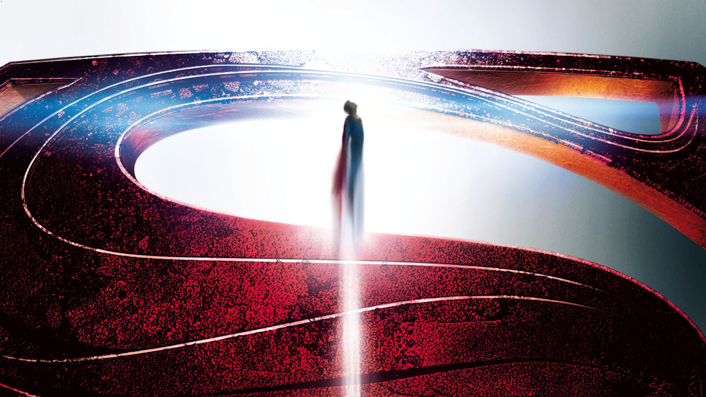
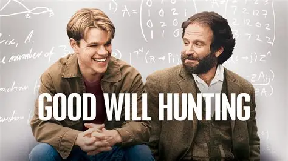
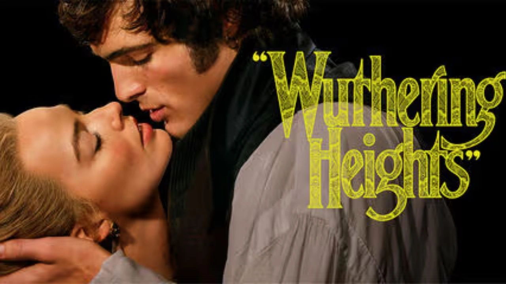

Man of Steel
Une surprise solide. Malgré un visuel un peu trop gris, le film impressionne par sa puissance et une OST magistrale signée Hans Zimmer.
Lire plusL'aura et l'acier. Entre une farm d'aura légendaire et un filtre gris discutable, découvrez pourquoi le Superman de Zack Snyder ne laisse personne indifférent.
Lire la critiqueC'est simple : j'écris quand un film me marque, que ce soit en bien ou en mal. Ma sélection n'a aucune limite de temps : je peux aussi bien parler d'un blockbuster sorti hier que d'un classique d'il y a 50 ans. Ce qui compte, c'est l'impact de l'œuvre.
Si une critique te semble plus courte ou moins détaillée, c'est qu'elle reflète mon ressenti brut au moment du visionnage. Je privilégie l'authenticité de l'émotion à une analyse scolaire trop rigide.
Mon avis n'est jamais figé : le cinéma est un art qui se redécouvre. Si de nouveaux détails me reviennent ou si ma réflexion mûrit avec le temps, je mets régulièrement les pages à jour. C'est un contenu vivant, à l'image de ma passion.

Une surprise solide. Malgré un visuel un peu trop gris, le film impressionne par sa puissance et une OST magistrale signée Hans Zimmer.
Lire plus
Un film d'une justesse incroyable, porté par des interprétations magistrales.
Lire plus
Une réinterprétation viscérale et moderne d'un classique gothique.
Lire plus